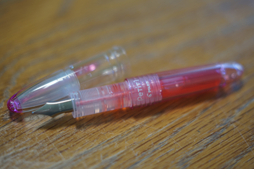
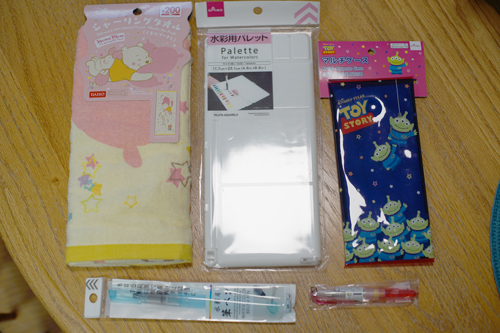
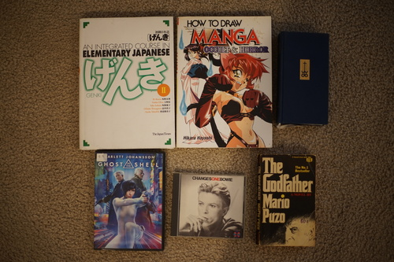

I promised you all, this very same month, that I wouldn't buy more pens. I walked into a store, saw a pen for $4, and bought it. I am so sorry.
It's a pink Pilot Petit1. It was so cute, so small, so pink... The nib feels a lot cheaper than my kakuno. It feels scratchy and looks much closer to a shaped slab of stainless steel. I can't imagine my kakuno has an amazing nib either so this one must just not be impressive in the slightest. I plan to leave it in my purse and I'll fill it with lovely violet scented ink once I use up this (also cute) pink ink.
It was relatively easy to pass up all the cool inks at the shop once I remembered they don't smell. I saw preppies and kawecos and lamys for the first time but none of them stood out terribly. the kawecos were much smaller and lighter than i had expected. I did want to get a refillable brush pen but I didn't have enough time to research. Maybe I'll get to go back or maybe i'll just use a waterbrush.
none of these are from a thrift store but i'm documenting them anyway so i can remind myself what of junk i'm filling my house with
there was a cute one in front of it that ryan tried to convince me to buy, but i passed on it. then I saw this one of pooh and piglet snuggling and that was the end of that. i didnt even notice it was one of the higher priced items until later. oops...
i have been looking for a palette for so long at the thrift store to no avail. i'm tempted to get another for the water color set i bought since I want to use this one with my gouaches. apparently youre not supposed to dry out your gouaches though.
ryan picked this out for his mom
it very well could end up being garbage quality. the water reservoir is very big on this one
And a thrift store haul, but not mine! most of it is for me though...
I haven't even memorized katakana yet but Ryan is getting me all set up.
how silly!!
just in case you need the planetary phases from 1900-1930
perfect price! I'm ready to see how bad this is.
always happy to get another bowie cd I don't have
a pre movie printing